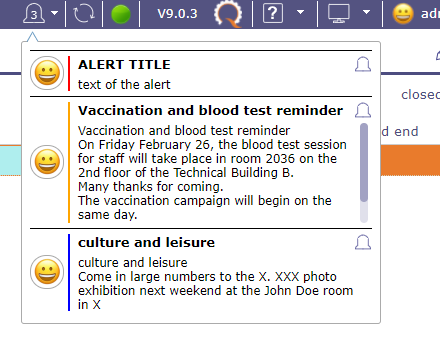
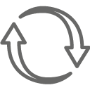

Control Automation¶
The menu “controls and automatisms” allows to manage and parameterize efficiently and finely the triggering events as well as all that ensues from it … automatically.
Sending mails, changes of status, status, loading of notes …
Workflow¶
A workflow defines the possibility to go from one status to another one, and who (depending on profile) can do this operation for each status.
Once defined, a workflow can be linked to any type of any item.
It is possible to define some mandatory fields on some status change (in the definition of type of item or through the Screen Customization plugin).
If a field is required for the transition from one status to another then you will be automatically redirected to the required field.
Regardless of the layout and presentation of your screens.
Workflow screen¶
Select status
Click on  to display the status list.
to display the status list.
Select or hide status¶
Choose the statuses to keep or hide by clicking on the checkboxes
Section List of types using this workflow
List of all elements and objects related to this workflow
List of types using this workflow¶
Section Workflow Diagram
The workflow diagram presents a visual representation of the workflow displaying all possible transitions (independently to profile rights).
Workflow Diagram¶
Section Habilitation to change from a status to another
The habilitation table helps defining who can move from one status to another one.
Each line corresponds to the status from which you want to be able to move.
Each column corresponds to the status to which you want to be able to go.
It is not possible to go from one status to itself (these cells are blank).
Just check the profile (or “all”) who is allowed to pass from one status to the other.
Habilitation table¶
Make sure that it is still possible to transfer an item from one status to another. Because it is possible to get stuck on a status.
Check the links so that there is still an outlet.
Email Templates¶
The user is able to format mails that are sent automaticaly on events.
When using template, the standard email formating is replaced with selected one.
Just define your templates, and select it on the “Mail on Events”
Field element updated and type
If not set, the template is valid for every type of the element
If element is set, only these elements will be able to select the template
if element and type are defined, only elements of the corresponding type will be able to select the model of mail
Specifics Tags on email template
Specific tags¶
In the model, the user can use any property of the subject and display it in the mail using specific tags.
you just need to use the tag $ {projectName} for the name of the project to appear and $ {idproject} to display the identification number of this one.
Tip
For properties referencing an external element, such as idXxxxx, use ${nameXxxxx}
Other tags are available as parameters for email titles
More details, see Global Parameters
Some specific tags can also be used
${item} : class of the item
${dbName} : display name of current instance
${responsible} : synonym for ${nameResource}
${sender} : name of user sending the email
${project} : synonym for ${nameProject}
${url} : url to get the direct link to the item
${goto} : display Class and Id of item, clickable to have direct link to the item
Attached files.
${allAttachments} : allow to add to your template all the attached files of the element
${lastAttachment} : allow to add the last attached files to the element
Warning
When sending all the files, the software retrieves the files one by one and this, in the order of insertion, from the most recent to the oldest attached file.
If the maximum size allowed does not allow all files to be sent, then the software will stop until the maximum size is reached.
If the last attached file saved in the software alone exceeds the maximum authorized size, then no file is sent.
This tags are available except in the mail title because they display a table
${HISTORY} : displays the last change of an object.
${HISTORYFULL} : display all the modifications
${LINK} : list linked elements to the item
${NOTE} : lists the element’s notes in tabular form
${NOTESTD} : list notes in default format
the Tags selector
Insert specific tags¶
A tag selector is available under the text fields.
Choose the tag you want to insert.
Click on insert
The tag appears in the body of the text
Notifications on event¶
The app is able to automatically send internal emails or notifications when an item is updated.
Events are defined on an element and/or an element type.
If the type field is not defined, the event is valid for each type of the element.
for emails
The email message is formatted to show information about the item.
Selecting a template, will use the formatting from the template instead of the default standard formatting.
Email titles are defined in Global parameters.
for notifications
you can use the notifications generated by your browser or the internal notifications of ProjeQtOr.
When opening the application in your browser, you will be offered an authorization message for the display of ProjeQtOr notifications.
After acceptance, notifications from your browser will replace internal notifications.
You will see notifications from your desktop even if you are not directly on the app.
Warning
You must allow notifications from your browser in your operating system settings.
The ProjeQtOr application must be running in the background to continue receiving notifications.
browser message to allow notifications¶
Description section
In the description section you will detail what will be the levers to trigger the sending of an email.
Status is one of these levers. Positioning items in the chosen status will generate an email.
Or choose any other event in the drop-down list.
Events list¶
Receivers Section
List of addresses of the mails.
The list is not nominative, but defined as roles on the element.
Each addressee will receive mail only once, even if a person has several “checked” roles on the element.
See: Receivers list for receivers detail.
Receivers section¶
Receivers list¶
Receivers can receive email and alert.
A description of receivers below.
Requestor
The contact defined as requestor on current item; sometimes appears as “contact” (on quotation and order, for instance) and sometimes have no meaning (for instance for milestone).
Issuer
The user defined as Issuer.
Responsible
The resource defined as responsible.
Project team
All resources allocated to the project.
Global project team
all the resources allocated to the project and those of the parent projects.
Project leader
The resource(s) allocated to the project with a “Project Leader” profile.
Project manager
The resource defined as the manager on a project.
Assigned resource
All resources assigned.
Other
Provides an extra field to manually enter email addresses.
If “other” is checked, an input box is displayed to enter a static mail address list.
Several addresses can be entered, separated by semicolon.
Delays for tickets¶
Delays for tickets screen¶
It is possible to define a default delay for tickets, for each ticket type, each ticket urgency and for each status.
Note
On creation, the due date will automatically be calculated as creation date + delay.
Section Description
Field |
Description |
|---|---|
Unique Id for the delay definition. |
|
|
Ticket type the delay applies to. |
|
Urgency of ticket the delay applied to. |
|
The project on which the delays will be applied. |
|
Value of delay. |
Flag to indicate that delay definition is archived. |

Field Value
Unit for the value can be
Days: simple calculation as days
Hours: simple calculation as hours
Open days: calculation excluding days off
weekends and days off defined on “calendar”
Open hours: calculation only on the “standard open hours” defined in Global parameters screen.
Ticket status
You determine what the status of the ticket will be for the timeframe you create.
For the same ticket, you can have 2 days to take charge of it, 1 day to process it and 1 day to close it.
Indicators¶
Indicators¶
It is possible to define indicators on most elements. You can set the indicators on:
actions
activities
customer invoices
customer invoice exchanges
customer orders
customer quotes
individual expenses
issues
meetings
milestones
supplier orders
projects
project expenses
supplier invoices
supplier offers
questions
requirements
risks
payment deadlines to suppliers
test sessions
and finally the tickets
Depending on type of elements the type of indicators that can be selected in list differs.
Some indicators are based on delay (due date), some on work, others on cost.
For each indicator, a warning value and an alert value can be defined in days or hours (working or not).
Section Description
Field |
Description |
|---|---|
Unique Id for the indicator definition. |
|
Element |
The elements the indicator applies to. |
Type |
Type of the elements the indicator applies to. |
Indicator |
Indicator applies to. |
Reminder |
Delay before due date or % of work or % or cost to send a warning. |
Alert |
Delay before due date or % of work or % or cost to send an alert. |
Flag to indicate that delay definition is archived. |
Section Mail receivers
List of addresses of the mails.
The list is not nominative, but defined as roles on the element.
Each addressee will receive mail only once, even if a person has several “checked” roles on the element.
See : Receivers list for receivers detail.
Section Internal alert receivers
List of addresses of the internal alert.
The list is not nominative, but defined as roles on the element.
See : Receivers list for receivers detail.
Predefined notes¶
The predefined note set the possibility to define some predefined texts for notes.
When some predefined notes are defined for an element and / or type a list will appear on note creation.
Selecting an item in the list will automatically fill in the note text field.
Section Description
Field |
Description |
|---|---|
Unique Id for the predefined note. |
|
|
Name of the predefined note. |
Element |
Kind of item (Ticket, Activity, …) for which this predefined note will be proposed on note creation. |
Type |
Type of element for which this predefined note will be proposed on note creation. |
Flag to indicate that delay definition is archived. |
|
Text |
Predefined text for notes. |
Field Element
If not set, predefined note is valid for every element type.
Field Type
If not set, predefined note is valid for every type of the element.
Checklists¶
It is possible to define checklist forms for each element or each type of element.
When a checklist form exists for a given element, the checklist is available only for the element.
Checklist screen¶
Section Description
Field |
Description |
|---|---|
Unique Id for the checklist definition. |
|
Element |
The elements the checklist applies to. |
Type |
Type of the elements the checklist applies to. |
Flag to indicate that checklist definition is archived. |
Section Checklist lines
A checklist is built from checklist lines.
Click on
 to create a new checklist line.
to create a new checklist line.Click on
 to update an existing checklist line.
to update an existing checklist line.Click on
 to delete the corresponding checklist line.
to delete the corresponding checklist line.
Choices for the checklist lines¶
Tip
Details of dialog box
Each line has a name, an order and up to 5 check choices.
A line with no check choice will be displayed as a section title.
Name and Choices have 2 fields :
Displayed caption.
Help text that will be displayed as tooltip.
Checks can be exclusive (select one will unselect others) or not (multi selection is then possible).
KPI definitions¶
A performance indicator or key performance indicator (KPI) is a type of performance measurement.
It is possible to define Kpi on incomings and deliverables items.
KPI Definition screen¶
Section Description
Warning
Description integrates the formula used to calculate the KPI.
Section Tresholds
It is possible to attributes tresholds lines to KPI.
Click on
to create a new JobList line.Click on
to update an existing JobList line.Click on
to delete the corresponding JobList line.
Note
Keep in mind KPI is an indicator of performance at project level (opposite to indicator which is calculated at item level).
To display the indicator, use Kpi report. See: Reports
List of KPI Reports¶
JobList¶
The JobList can be used for each item or item type
It is generally used to detail an activity or a ticket.
It also acts as an indicator to monitor compliance with date values thanks to the lead time of tasks.
Section JobList lines
A JobList is built from JobList lines.
Click on
to create a new JobList line.Click on
to update an existing JobList line.Click on
to delete the corresponding JobList line.
Task anticipation delay .
Joblist colors anticipation delay¶
This deadline is fixed for each step created in the joblist. It works with planned dates. It is not compulsory.
A color code allows you to anticipate these dates
White: Without anticipation delay
Green: Check the box to indicate that this step has been completed. The dot turns green.
Orange: You enter the anticipation period
Red: you have exceeded this deadline
Notifications¶
You must activate the notifications module to display the corresponding screens
This system allows you to generate notifications or according to very “powerful” rules (defined as “where” clauses).
Note
ProjeQtOr offers 2 systems to generate alerts or reminders: definition of notifications and manual notifications from the tools menu
see: Notifications.
Notification definition in control and automation menu allows you to create notifications about events
Notification System¶
If it is generated by the notification system, it is linked to an element of the system (Action, Invoice, …).
Notifications system screen¶
Creation
The definition of notification generation is based on the following:
The title that can contain the field values of the notifiable element or its sub-elements
The element of the system that determines the notification, called “Notifiable Element” (notifiable)
The type of notification (Alert, Warning, Information)
The notification rule notifying the elements related to the generation of a notification
The content may also contain the field values of the notifiable element or its sub-elements.
The date (referred to as the reference date) at which the notification must be generated. This is one of the dates of the notifiable item that is not the creation date.
The generated notification receivers. Fields of the notifiable element or its sub-elements that refer to users.
The choice to send, or not, to all the sending of emails at the same time as the notifications.
Section Description
This section briefly describes the type of notification
Its name, its type: alert, information or warning as well as the notifiable element.
Section Notification title
This section allows you to give a title to your notification.
This title will be the object of the programmed mail if you tick the box send an email in the receivers section
You can add dynamic fields with help to insert a dynamic field in the title
The title of the notification can therefore contain fields of the “notifiable” object and its linked elements via an idXXX.
where XXX is the name of the linked item.
Select an object and / or a field and click the Insert button so that the dynamic field with the correct syntax fits directly in the title, where the cursor is.
In this case, the syntax must be: #{the name of the field} …
Tip
#{billId} - Invoice not paid - Sent on #{sendDate} If the rule (see below) of the instruction on the invoice of ‘billId’ 2019-12-30-0001 whose sending date is 30-12-2019 then the title of the notification will be:
2019-12-30-0001 - Invoice not paid - Submitted on 12-30-2019
Section Rule to apply
Notifications rules¶
This rule determines which instance of the item will generate a notification.
The syntax is the one we take for a WHERE clause in an SQL statement.
Tip
Scheduling a notification for all invoices where the amount has been paid = total amount AND project name ‘ACME’
#{paymentAmount} < #{fullAmount} AND #{idProject.name} = ‘ACME’ AND isnull (#{paymentDate)
Note
The rule to apply is not mandatory. If the rule is empty, then only the reference date is used to determine whether or not a notification is generated.
In addition to choosing a dynamic field, you can choose to use an operator or function with the following elements:
Notification content
This section is mandatory
You can also add dynamic fields with help to insert a dynamic field in content in the same way as in the description section
Section Start as
Start as section¶
this section allows you to program the frequency of the notification display
The reference date
Date on witch will be generate the notification (minus the number of days or minutes programmed before)
Notify before: This is a number of days before the notification date for which the notification is to be generated
This field is mandatory
Example “delivery expected date” is selected.
For all deliverables that do not follow the previous rule, a notification will be generated if the delivery date is not respected.
Every year
If the year is checked, the generator is a notification every year to the month and the day of the reference date
If the year is checked, the month and day filled, then it is a birthday. The reference date will not be used.
Every month / Week / Open day
Is selected, responsive notifications will be generate monthly / weekly or each open day
Receivers
These are the types of people who are notified.
The syntax is as follows: One of the words in the “Help Authorized Recipients”
section separated by a ‘;
The following items allow you to choose the type of remitter.
If Sent e-mail checked, an e-mail will be generated even if the notification for each type of person has been defined.
See also
Global Parameters Management of automated service (CRON)
Gives in seconds, the time interval between two generations of notification (and the Cron system is active)
and between two the refresh of notifications on the HMI.
Note
The authorizations
The access rights for the ‘notification’ menu were given to the ‘standard’ projeqtor profiles (idProfile = 1 to 7) with the CRUD rights reader only
The access rights for the ‘notification definition’ menu have been given for the administrator profile (idProfile = 1)with the CRUD rights modifiers
Notification and the IHM¶
Notification on the login screen¶
After logging in, a message generated after “Login accepted” that tells you that you have unread notifications:
Display of unread notifications
It is done at 2 levels on the main screen:
Bottom right A notification icon appears as soon as a notification is not intended for the user.
Clicking on the icon gives direct access to the notifications screen.
 Notifications¶
In the secondary menu

Notifications¶
A tree whose title indicates the number of unread notifications intended for the user.
This tree has the following levels:
Level 1: The types of notifications
Level 2: The trigger for notifications
Level 3: The Notification Definition to Product Notifications
Level 4: The id of the element that generated the notification. Allows direct access to the item.
The icon  allows you to refresh notifications without waiting for the scheduled update.
The icon provides direct access to the notifications screen.
Numbers indicate the number of unread notifications
{kind=link}
{kind=link}